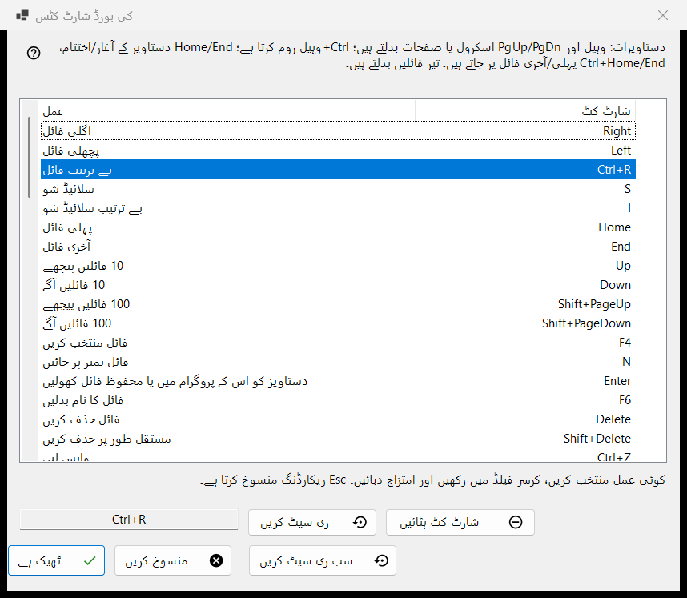
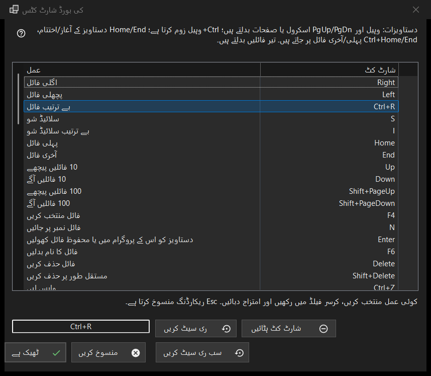

کی بورڈ شارٹ کٹس
یہ کس مقصد کے لیے ہے
ویور کے ان تمام عملوں کی فہرست جن کی کلید آپ بدل سکتے ہیں، ساتھ وہ شارٹ کٹ جس پر وہ اس وقت جواب دیتے ہیں۔ یہ ترتیبات کے فائلیں اور سسٹم صفحے میں، کی بورڈ شارٹ کٹس والی قطار کے ترتیب دیں.. بٹن سے کھلتی ہے۔ یہ ونڈو ایک ورکنگ کاپی میں تبدیلی کرتی ہے: جب تک آپ ٹھیک ہے نہیں دباتے، آپ کے پروفائل تک کچھ نہیں پہنچتا۔


اس ترتیب میں
- ترتیبات کھولیں، فائلیں اور سسٹم پر جائیں اور کی بورڈ شارٹ کٹس والی قطار میں ترتیب دیں.. دبائیں۔
- فہرست میں کوئی عمل منتخب کریں۔
- فہرست کے نیچے والے خانے پر کلک کریں اور نیا امتزاج دبائیں۔
- اگر وہ امتزاج پہلے ہی کسی اور عمل کے پاس ہے تو شارٹ کٹ آپس میں بدلیں، اس عمل سے ہٹا دیں یا منسوخ کریں میں سے ایک چنیں۔
- دوسرے عملوں کے لیے یہی دہرائیں؛ ضرورت ہو تو ری سیٹ کریں، شارٹ کٹ ہٹائیں یا سب ری سیٹ کریں استعمال کریں۔
- تبدیلیاں رکھنے کے لیے ٹھیک ہے دبائیں، یا سب چھوڑنے کے لیے منسوخ کریں دبائیں۔
عناصر
عمل اور شارٹ کٹ کی فہرست
ہر قطار ایک عمل اور اس کا بنیادی شارٹ کٹ دکھاتی ہے؛ جس عمل کی کوئی کلید نہ ہو اس کے سامنے تفویض نہیں لکھا ہوتا ہے۔ دس فولڈر سلاٹ فولڈر 1..0 میں منتقل کریں اور فولڈر 1..0 میں کاپی کریں کی صورت میں نظر آتے ہیں (ہندسوں کی کلیدیں منتقل کرتی ہیں، اوپر کی قطار کے ہندسے کے ساتھ Shift کاپی کرتا ہے)۔ کچھ عمل فیکٹری کی اضافی کلیدوں پر بھی چلتے ہیں (اگلی فائل Space اور PageDown پر بھی چلتی ہے)۔ فہرست میں صرف بنیادی کلید دکھائی جاتی ہے، لیکن جیسے ہی آپ عمل کو نیا شارٹ کٹ دیتے ہیں، اس کی تمام پرانی فیکٹری کلیدیں کام کرنا بند کر دیتی ہیں۔ فہرست کے اوپر کی عبارت دستاویزات کی ان مقررہ کلیدوں (ویل، PgUp/PgDn، Home/End، تیر) کے نام بتاتی ہے جو فہرست میں نہیں ہیں۔ عمل شیڈولڈ آپریشنز Share Manager کی شیڈولڈ آپریشنز ونڈو کھولتا ہے؛ طے شدہ طور پر اس کی کوئی کلید نہیں - کی بورڈ سے ونڈو کھولنے کے لیے اسے ایک کلید دیں۔
امتزاج ریکارڈ کرنا
کوئی قطار منتخب کریں، پھر فہرست کے نیچے والے خانے پر کلک کریں (یا قطار پر ڈبل کلک کریں) اور کلیدیں دبائیں؛ چاہیں تو Ctrl، Shift یا Alt کے ساتھ۔ خانہ پورا امتزاج ایک ساتھ ریکارڈ کرتا ہے، اور اکیلی ترمیمی کلید امتزاج شمار نہیں ہوتی۔ Esc کچھ ریکارڈ کیے بغیر خانے سے باہر نکال دیتا ہے۔ تبدیلی فہرست میں فوراً نظر آتی ہے، لیکن ابھی وہ صرف ورکنگ کاپی میں ہے۔
وہ کلیدیں جو تفویض نہیں ہو سکتیں
F1، F10، F11، Esc، Windows کلیدیں، Menu کلید، Alt+Tab، Alt+F4 اور Ctrl+Alt+Delete Windows یا پروگرام کی ہیں۔ ان میں سے کوئی دبانے پر یہ پیغام آتا ہے: یہ امتزاج سسٹم یا پروگرام کے لیے مخصوص ہے اور تفویض نہیں کیا جا سکتا۔ کچھ نہیں بدلتا۔
وہ امتزاج جو پہلے ہی لیا جا چکا ہے
سوال میں مالک کا نام ہوتا ہے: امتزاج X پہلے ہی دوسرے عمل کو دیا گیا ہے۔ شارٹ کٹ آپس میں بدلیں اس عمل کو وہ شارٹ کٹ دے دیتا ہے جو موجودہ عمل کے پاس تھا (ممکن ہے کوئی نہ ہو)۔ اس عمل سے ہٹا دیں اسے تفویض نہیں کی حالت میں چھوڑ دیتا ہے اور امتزاج آپ کو دے دیتا ہے۔ منسوخ کریں کچھ نہیں بدلتا۔
ری سیٹ کریں، شارٹ کٹ ہٹائیں اور سب ری سیٹ کریں
ری سیٹ کریں منتخب عمل کو اس کی فیکٹری کلید پر لوٹا دیتا ہے۔ شارٹ کٹ ہٹائیں عمل کو بالکل بغیر کلید کے چھوڑ دیتا ہے، اس لیے اس کی فیکٹری کلید بھی کام کرنا بند کر دیتی ہے؛ کسی کلید کو بند کرنے کے لیے اسے استعمال کریں۔ سب ری سیٹ کریں پوچھتا ہے: کیا تمام شارٹ کٹس کو ڈیفالٹ پر واپس لائیں؟ طے شدہ پر لوٹائیں ونڈو میں آپ کی تمام تبدیلیاں مٹا دیتا ہے؛ منسوخ کریں انہیں رہنے دیتا ہے۔
ٹھیک ہے اور منسوخ کریں
ٹھیک ہے پورا نقشہ پروفائل میں محفوظ کر دیتا ہے اور ویور اسے فوراً استعمال کرتا ہے۔ منسوخ کریں ونڈو بند کرتا ہے اور پروفائل کو بالکل ویسا ہی چھوڑتا ہے جیسا وہ تھا۔ ویڈیو اور آڈیو کی کلیدیں (وقفہ، میوٹ، آواز، آگے پیچھے جانا، رفتار، فریم بہ فریم، ٹریک) اس میڈیا پر کام کرتی ہیں جو چل رہا ہو۔